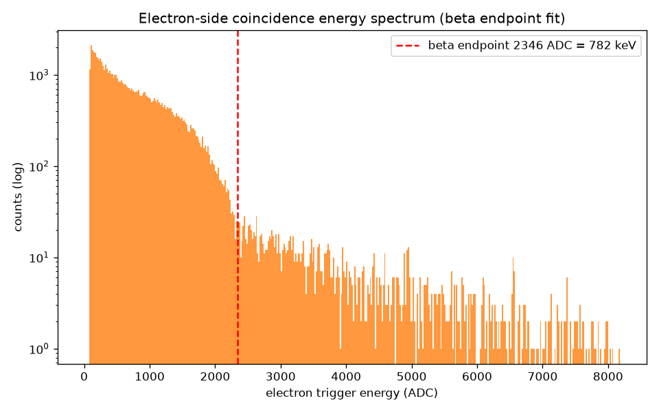
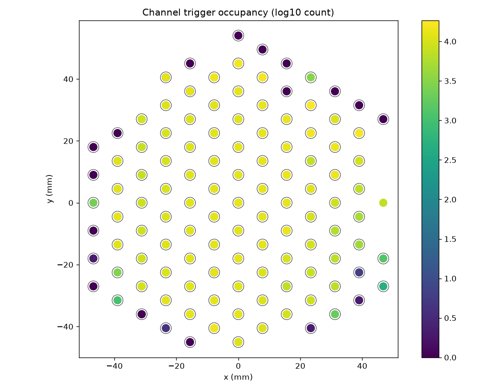
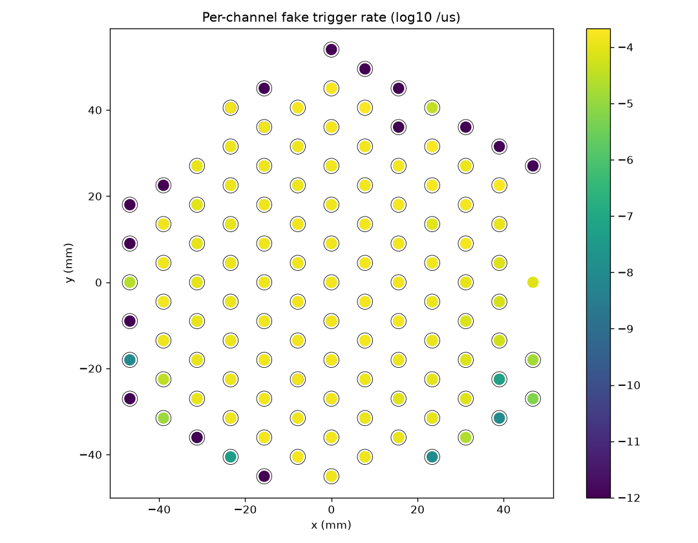
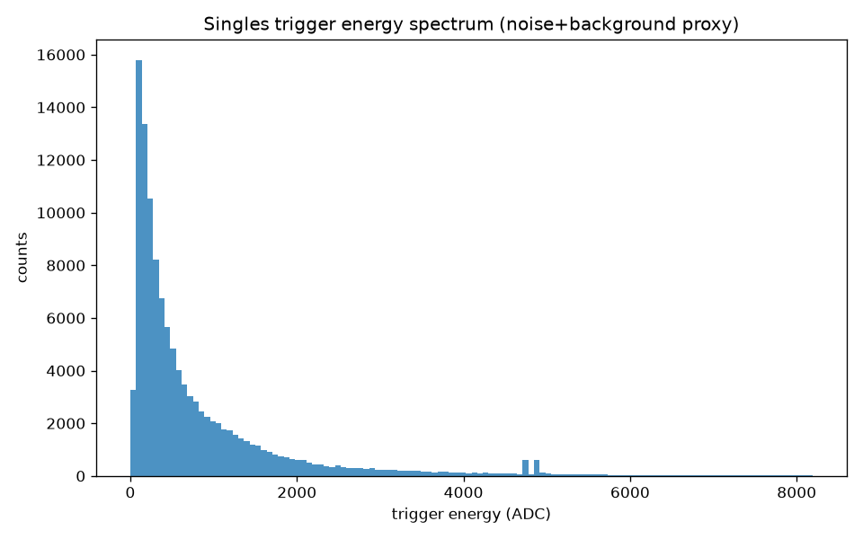
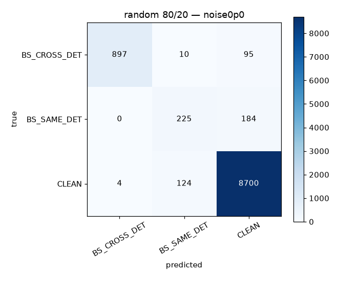
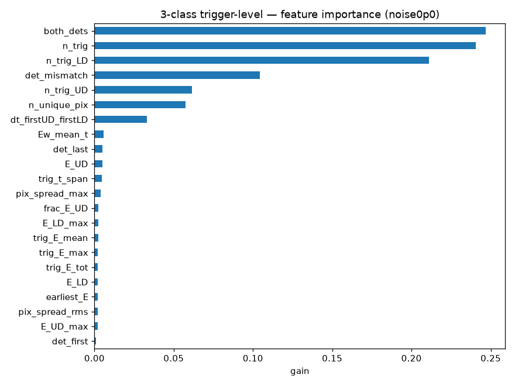
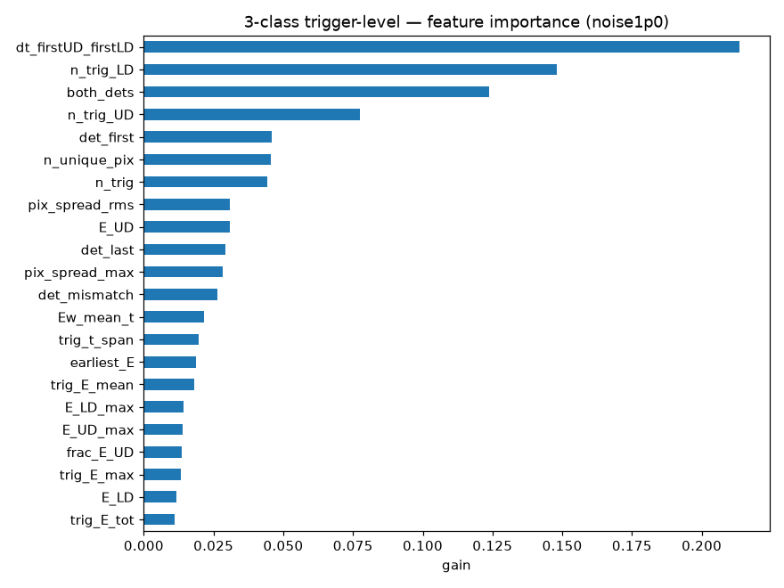
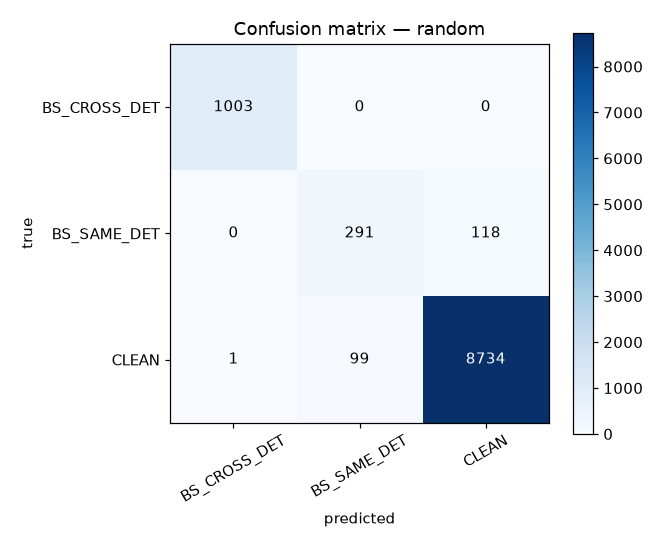

Abstract
We evaluate whether a Monte Carlo simulation of the Nab spectrometer can stand in for real DAQ output when training a machine-learning classifier for electron backscatter events. Simulated hits and real DAQ triggers are converted to one trigger-record representation, and 22-feature, three-class XGBoost classifiers are trained under two simulation conditions: no injected noise (×0.0) and nominal measured-rate noise (×1.0). The trigger-level classifier reaches 0.96 accuracy on simulated data with no injected noise, with recall of 98.6% for CLEAN, 89.5% for cross-detector backscatter, and 55.0% for same-detector backscatter. Yet real data remain structurally different from simulated trigger records: a discriminator separates them with AUC ≈ 0.99 at every evaluated noise scale. The leading discrepancies are in the emulated detector and readout response, including upstream energy response, timing, and spatially correlated pixel activity. This indicates that the current independent Poisson noise and trigger-response model is not yet faithful to the real DAQ.
Introduction
QuestionNab measures neutron beta decay with a magnetic spectrometer. A decaying neutron produces an electron and a proton that travel in opposite directions toward two segmented silicon detectors: the upstream detector (UD, proton side) and the downstream detector (LD, electron side). The physics goal—including the electron–proton correlation coefficient a—depends on measuring the electron energy spectrum precisely.
A persistent nuisance is electron backscatter. An electron can strike a detector, deposit only part of its energy, and bounce back out. Cross-detector backscatter leaves an obvious signature because both detectors fire. Same-detector backscatter is stealthier: the electron returns to the same detector, so its partial deposition can quietly distort the energy spectrum with a low-energy tail.
A truth-derived classifier already separated these event classes well. The open question was harder and more practical: can a classifier use only trigger records that the DAQ actually produces, learn from simulation, and remain meaningful on real unlabeled data?
Data & Methods
Pipeline2.1 Real data
Real triggers come from DAQ Run 8908, extracted directly from the trigger stream: 115,782 triggers organized into 45,695 coincidence events. Each event carries timestamp, pixel, and energy in ADC, mapped to detector side and position. Leakage-prone fields such as event type and waveform metadata are excluded from the feature set.
2.2 Detector response
The measured response anchors the trigger emulator: 0.3333 keV/ADC, 183 healthy and 25 dead channels, and a fixed 56 µs DAQ record window. Per-channel trigger rates and the measured single-trigger amplitude spectrum supply the background model.
One trigger contract
Real DAQ records are normalized into event-level trigger lists without training labels or waveform-derived shortcuts.
Measured detector behavior
Calibration, occupancy, trigger rates, and background amplitudes are measured from the real data and used downstream.
Hits become triggers
Geant4 hits pass through dead-channel masking, energy smearing, thresholds, and Poisson fake-trigger injection.
Train, then challenge
XGBoost is evaluated on random and job-held-out events; simulation is then compared directly with real data.




2.3 Trigger emulator and noise scales
Simulated Geant4 hits are transformed into the same trigger-record schema as real data. A dead-channel mask, energy smearing, and threshold crossings reproduce physics triggers. Noise-induced pixel triggers are drawn from per-channel Poisson rates and measured amplitude spectra at four scales: ×0.0, ×0.5, ×1.0, and ×2.0.
2.4 Unified features
Exactly one feature function operates on both domains, producing 22 trigger-level quantities with the same contract and no missing values.
Shared feature contract
22 features · 0 NaNsn_trign_trig_UDn_trig_LDtrig_E_tottrig_E_maxtrig_E_meantrig_t_spanE_UDE_LDfrac_E_UDE_UD_maxE_LD_maxdet_firstdet_lastdet_mismatchboth_detsdt_firstUD_firstLDn_unique_pixpix_spread_maxpix_spread_rmsEw_mean_tearliest_E
2.5 Classifier and evaluation
The model is a three-class XGBoost classifier with 400 trees, maximum depth 6, and learning rate 0.05. The labeled population contains 51,197 events: 44,145 CLEAN, 5,009 BS_CROSS_DET, and 2,043 BS_SAME_DET. We report both an 80/20 random split and a simulation-job holdout, keeping entire jobs out of training.
Results
Evidence3.1 Trigger-level retraining
The clean trigger-level model reaches 0.959 accuracy and 0.810 macro-recall. Moving away from truth-derived hit features costs about three points of accuracy and eight to nine points of macro-recall, concentrated in the rare and weakly observed BS_SAME_DET class.
| Model | Random accuracy | Macro recall | Macro AUC | Holdout accuracy | Same-detector recall |
|---|---|---|---|---|---|
| Prototype · truth-derived | 0.9787 | 0.9001 | 0.9972 | 0.9808 | 0.711 |
| Trigger · noise ×0.0 | 0.9593 | 0.8103 | 0.9523 | 0.9637 | 0.550 |
| Trigger · noise ×1.0 | 0.9491 | 0.7189 | 0.9431 | 0.9496 | 0.313 |
Random-split metrics are shown except where explicitly labeled holdout. Same-detector recall is the random-split value.
clean trigger model
Cross-detector events retain a strong observable signature. Same-detector backscatter does not: after truth-derived hit information is removed, only subtle intra-detector energy and timing structure remains.




Cross-noise robustness
The model trained with nominal noise retains 96.1% accuracy on data without injected noise and 95.4% at half the nominal noise rate. In contrast, the model trained without noise falls to 74.3% accuracy when tested at the nominal noise rate because it often mistakes additional triggers for backscatter.
| Train → test | Accuracy | Macro recall | Macro AUC | SAME recall |
|---|---|---|---|---|
| ×1.0 → ×0.0 | 0.9610 | 0.7880 | 0.9567 | 0.474 |
| ×1.0 → ×0.5 | 0.9537 | 0.7436 | 0.9517 | 0.367 |
| ×1.0 → ×2.0 | 0.9291 | 0.6544 | 0.9125 | 0.181 |
| ×0.0 → ×1.0 | 0.7430 | 0.7114 | 0.8695 | 0.528 |
3.2 Sim-vs-real validation
The decisive test is not classifier accuracy on simulation, but whether the trigger representation actually resembles real detector output. Under the same two-detector coincidence selection, 96.95% of real events pass, compared with only 25.4–49.9% of simulated events across the noise sweep.
Simulation under-produces two-detector events
Noise injection raises the simulated coincidence fraction, but even ×2.0 remains almost 47 percentage points below real data.
| Noise scale | Coincidence fraction | Mean KS | Discriminator AUC | Interpretation |
|---|---|---|---|---|
| ×0.0 | 25.42% | 0.1972 | 0.9901 | clean but structurally distinct |
| ×0.5 · best KS | 33.06% | 0.1812 | 0.9918 | closest marginal match |
| ×1.0 | 39.51% | 0.2547 | 0.9939 | noise begins to overshoot |
| ×2.0 | 49.90% | 0.3560 | 0.9971 | more separable, not less |
at every noise scale
A flexible classifier can identify whether an event is real or simulated almost perfectly. The residual mismatch is not a small rate correction; it is structural.
Explore the domain gap feature by feature
Every panel compares normalized coincidence-selected distributions. Use the sticky noise-scale control above; all ten histograms and their KS readouts update together.
Simulation = red
Trigger multiplicityTotal triggers per event
KS —Upstream multiplicityUD triggers per event
KS —Downstream multiplicityLD triggers per event
KS —Total trigger energySummed event energy · keV
KS —Upstream energyUD summed energy · keV
KS —Maximum upstream energyLargest UD trigger · keV
KS —Maximum downstream energyLargest LD trigger · keV
KS —Trigger time spanFirst-to-last trigger · µs
KS —Cross-detector timingFirst UD to first LD · µs
KS —Spatial spreadRMS triggered-pixel spread · mm
KS —The compact simulation sample is available at noise ×1.0 only; histogram controls do not alter this panel. Opacity reveals density rather than individual event identity.
XGBoost gain from the real-vs-sim discriminator. Timing, upstream energy, upstream multiplicity, and spatial spread dominate the separation.
3.3 Physics sanity check
Applying the noise ×1.0 classifier to all real events predicts a percent-level backscatter population: 96.9% CLEAN, 1.6% BS_SAME_DET, and 1.5% BS_CROSS_DET. This aggregate fraction is plausible, but it cannot validate event-level labels while the domain gap remains this large.
3.25% exceed the 782 keV endpoint
Discussion
DiagnosisThe domain gap is real and not subtle. A two-sample AUC of 0.99 means that the same 22 trigger-level features used for physics classification also carry enough information to identify the source domain almost perfectly. Crucially, the discriminator and the per-feature KS distances agree on where the mismatch lives.
- 01
Upstream energy response
E_UDandE_UD_maxtop both mismatch rankings. Together with the coincidence-rate gap, they indicate that simulation does not trigger the proton-side detector often or energetically enough. - 02
Timing structure
Real trigger spans are about four times longer—43.4 µs versus 11.2 µs—and the first-UD to first-LD interval is among the five largest KS discrepancies.
- 03
Spatial spread
Real events activate a broader arrangement of pixels than independent single-channel Poisson noise predicts. Correlated noise, cross-talk, or charge-sharing is missing.
Why same-detector recall remains low
BS_SAME_DET is both rare—2,043 labeled events in the training population—and weakly observable at trigger level. The primary and return deposits occur on the same detector, so the strongest cross-detector features do not help. Its useful signature is hidden in fine intra-detector timing and energy structure that the current feature contract does not explicitly summarize.
Measured-rate noise is directionally useful, but it acts mainly as a rate knob. Closing the sim-to-real gap requires a better model of the detector—not simply more random triggers.